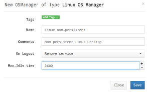

Руководство администратора VDI Appliance
Глоссарий
| Понятие | Определение |
|---|---|
| Аутентификатор (Authenticator) | Ресурс, обеспечивающий управление правами доступа пользователей к виртуальным ресурсам |
| Базовый образ (Base Machine) | Базовый шаблон виртуальной машины |
| Менеджеры операционной системы (OS Managers) | Управляющий компонент для операционной системы виртуального рабочего места |
| Сервис (Service) | Ресурс, обеспечивающий выделение виртуальных рабочих мест |
| Тонкий клон (Linked Clone) | Клонированный образ виртуальной машины минимального размера |
| Транспорты (Transports) | Приложения для подключения к виртуальным рабочим местам по требуемым протоколам |
Общие данные
Руководство описывает действия администратора при настройке основных компонентов программного комплекса и содержит список и описание наиболее часто встречающихся команд.
Администрирование UDS
Для первоначальной настройки и администрирования программного комплекса необходимо ввести IP-адрес или имя сервера VDI Appliance (UDS брокера) через http или https доступ.
При первом входе в панель администрирования UDS необходимо ввести имя и пароль администратора, как показано на Рис. 1.
После входа в панели администрирования можно изменить пароль, создать или выбрать новых пользователей, которым будет разрешен доступ в панель администрирования.
Рис. 1
Если уже существует настроенная учетная запись пользователя с правами администратора для платформы UDS, необходимо ввести имя и пароль этого пользователя и выбрать тип аутентификации, который будет использоваться для входа.
Если настроено несколько аутентификаторов, и необходимо получить доступ к панели администрирования с помощью локальной учетной записи администратора, выбранный аутентификатор не будет использоваться, так как этот пользователь не будет сопоставлен с аутентификатором.
Для перехода к порталу администрирования необходимо выбрать «Dashboard»(Панель) в меню пользователя, как показано на Рис. 2.
Рис. 2
После перехода к администрированию платформы будет создан пул сервисов, в котором выполняется развертывание виртуальных рабочих столов и сервисов, как показано на Рис. 3

Рис. 3
Конфигурация каждого пула сервисов составляется из различных элементов:
- каждый пул состоит из различных компонентов (базовые сервисы, менеджеры ОС, транспорты и аутентификаторы);
- после настройки компонентов первого пула, начнется его создание. Этот процесс повторится и для всех остальных сервисных пулов;
- все настроенные сервисные пулы вместе образуют тип развертывания виртуального рабочего стола, управляемого платформой UDS.
Настройка сервис-провайдеров
Сервис-провайдер отвечает за предоставление IP-сервисов.
Сервисы, предоставляемые платформой, могут быть виртуальными рабочими столами по требованию или приложениями, предоставляемыми платформой виртуализации или постоянными физическими/виртуальными рабочими столами, назначенными конкретным пользователям путем назначения IP-адресов.
Для создания пула сервисов должен быть создан хотя бы один сервис-провайдер. Поддерживаемые типы сервис-провайдеров приведены на Рис. 4.

Рис. 4.
Настройка платформы VDI на базе HOSTVM
В данном разделе описано развертывание платформы VDI через виртуальную инфраструктуру HOSTVM
Регистрация провайдера «oVirt Platform Provider»
Для регистрации провайдера «oVirt Platform Provider» необходимо зайти в раздел «Services», нажать «New» и выбрать «oVirt/RHEV Platform Provider», как показано на Рис. 5.
Рис. 5.
В разделе «oVirt/RHEV Platform Provider» должны быть настроены следующие параметры:
Основные, как показано на Рис. 6:
- Имя (Name): имя сервисного провайдера;
- Версия oVirt/RHEV (oVirt Verison): версия подключаемого oVirt/RHEV;
- Host: имя или IP-адрес oVirt-engine (сервера RHEV-Manager);
- Имя пользователя (Username): имя пользователя (в формате user@domain), имеющего доступ с правами администратора на oVirt-engine (RHEV-Manager);
- Пароль (Password): пароль пользователя.
Рис. 6.
Дополнительные, как показано на Рис. 7:
- количество одновременных задач создания рабочего стола (поле «Creation concurrency»);
- количество одновременных задач удаления рабочего стола (поле «Removal concurrency»);
- тайм-аут при установлении соединения с помощью oVirt-engine (RHEV-Manager);
- диапазон MAC-адресов для присвоения виртуальным рабочим столам.

Рис. 7
С помощью кнопки «Test» можно проверить, что соединение выполнено успешно.
После сохранения настроенные сервис-провайдеры будут подтверждены и готовы для создания базовых сервисов в oVirt.
Количество сервис-провайдеров типа «oVirt/RHEV Platform Provider», регистрируемых в рамках платформы, не ограничено.
Чтобы изменить какой-либо параметр в уже существующих сервис-провайдерах, необходимо выбрать его и нажать «Edit», как показано на Рис. 8.
Рис. 8
С помощью кнопки «Enter Maintenance Mode» можно приостановить все операции, запущенные платформой для данного сервис-провайдера.
Рекомендуется поставить провайдер в режим обслуживания в случае потери связи или его остановки для обслуживания.
Настройка сервиса на основе «oVirt / RHEV Linked Clone»
После установки платформы oVirt, где будут созданы рабочие столы, необходимо создать базовые сервисы на основе тонких клонов виртуальных машин oVirt / RHEV.
Следует выбрать сервис-провайдера, в котором будет создан тонкий клон оVirt / RHEV и нажать «New», как показано на Рис. 9.

Рис. 9
Минимальные параметры, которые необходимо настроить в «оVirt / RHEV Linked Clone»:
Основные параметры:
- Имя (Name): имя сервиса;
- Кластер (Cluster): кластер серверов oVirt, на котором будут размещены развернутые связанные клоны;
- Домен хранилища данных (Datastore Domain): хранилище, установленное для развертывания клонов виртуальных машин;
- Зарезервированное пространство (Reserved Space): минимальное свободное пространство, которое может использоваться системой UDS.

Рис. 10
Параметры виртуальной машины:
- Базовый образ (Base Machine): шаблон для развертывания виртуальных рабочих столов (Golden Image);
- Память (Memory): объем памяти, который будет присвоен (в мегабайтах);
- Гарантированная память (Memory Guaranteed): объем памяти, который будет гарантированно доступен для тонких клонов;
- USB: если выбрано, то виртуальные рабочие столы будут поддерживать перенаправление USB-устройств;
- Отображение (Display): протокол подключения виртуальных рабочих столов, развернутых через тонкий клон;
- Имена машин (Machine Names): префикс имени для всех тонких клонов, которые будут развернуты в этой службе (например, имена машин = win-);
- Длина имени (Name Length): длина номера суффикса, прикрепленного к корневому имени (например, Name Length = 3, win-000 ... win-999).
Рис. 11
После сохранения этой конфигурации будет готов действующий «oVirt Linked Clone» на платформе oVirt, как показано на Рис. 12.
Можно зарегистрировать необходимое количество «OVirt Linked Clone» на платформе UDS.

Рис. 12
После настройки всех компонентов среды UDS (сервисы, аутентификаторы, менеджеры ОС и транспорты подключений) и создания пула сервисов на сервере oVirt-engine можно видеть развернутые виртуальные рабочие столы на базе тонких клонов oVirt, как показано на Рис. 13.
Рис. 13
Настройка аутентификаторов
Аутентификатор является основным компонентом платформы доставки рабочих столов, так как позволяет пользователям и группам пользователей, которым предоставлены учетные данные, подключаться к различным сервисам на рабочих столах.
Если в пуле сервисов не назначен хотя бы один аутентификатор, не будет возможности для подключения пользователей к сервисам рабочих столов платформы.
В зависимости от деятельности и платформы можно выбирать внешние аутентификаторы (Active Directory, OpenLDAP и т. д.) или внутренние (внутренняя база данных и аутентификация по IP), как показано на Рис. 14.

Рис. 14
Аутентификатор Active Directory
Этот внешний аутентификатор обеспечивает доступ пользователям и группам пользователей, принадлежащим Active Directory, к виртуальным рабочим столам или приложениям.

Рис. 15
Минимальные параметры, которые необходимо настроить в аутентификаторе Active Directory:
- Имя (Name): имя аутентификатора;
- Приоритет (Priority): приоритет аутентификатора: чем ниже приоритет, тем выше он будет отображаться в списке аутентификаторов, доступных в окне доступа пользователя (это поле допускает отрицательные значения);
- Метка (Label): метка, позволяет получать прямой доступ к странице входа с использованием данного аутентификатора без необходимости выбора, используя URL вида: UDSServer / login / label (например, https: // UDSServer / login / AD);
- Host: IP-адрес или имя сервера AD;
- Port: порт подключения к серверу AD (обычно 389, или 636 при использовании SSL);
- Использовать SSL (Use SSL): если установлено значение «Yes», используется SSL-соединение с сервером AD;
- Пользователь (Ldap User): пользователь с правами чтения AD в формате: user @ domain;
- Пароль (Password): пароль пользователя;
- Тайм-аут (Timeout): тайм-аут соединения с аутентификатором;
- Base: базовая запись поиска в AD (например dc=example, dc=com).

Рис. 16
Нажав кнопку «Test», можно проверить, правильно ли настроено соединение с AD.
Настройка пользователей и групп
После настройки аутентификатора необходимо указать группы пользователей, участникам которых будет предоставлен доступ к сервисам виртуальных рабочих столов.
Для добавления группы выберите нужный аутентификатор в списке, перейдите на вкладку “Groups” и нажмите “New”.

Рис. 17
Для поиска укажите имя группы или его часть и нажмите “Search”.

Рис. 18
Выберите нужную группу в результатах поиска и нажмите “Accept”.

Рис. 19
Пользователи, состоящие в добавленных в аутентификатор группах, будут автоматически добавлены в систему при первом входе.
Исключение составляют аутентификаторы “Internal Database” и “IP Authenticator”, для которых пользователи добавляются только вручную.
Для добавления пользователя выберите нужный аутентификатор в списке, перейдите на вкладку “Users” и нажмите “New”.

Рис. 20
Для поиска укажите имя пользователя или его часть и нажмите “Search”. Выберите нужного пользователя в результатах поиска и нажмите “Accept”.

Рис. 21
При необходимости можно назначить пользователю специальные права доступа:
- Staff member: права администратора UDS и доступ к разделу Downloads (возможность скачивания приложения UDS Actor);
- Admin: права Staff Member, а также доступ к расширенным настройкам UDS (раздел “Tools” – “Configuration”).
Настройка менеджеров ОС
Менеджеры ОС обеспечивают управление ранее созданными сервисами Linked Clone.
Тип и настройки менеджера ОС определяют взаимодействие между ОС тонкого клона и брокером подключений UDS через приложение UDS Actor.
Для создания менеджера ОС необходимо нажать “New” в разделе “OS Managers” – “Current OS Managers”. Доступные типы менеджеров ОС показаны на Рис. 22.

Рис. 22
Настройка Linux OS Manager
Менеджер Linux OS предназначен для управления виртуальными рабочими столами на базе Linux-систем.
Минимально необходимые параметры настройки менеджера:
- Name: имя менеджера ОС;
- Logout action: выполняемое при завершении сеанса пользователя действие. Доступные варианты: Keep service assigned (виртуальный рабочий стол остается зарезервированным за пользователем, и при следующем обращении предоставляется ему же), Remove service (виртуальный рабочий стол удаляется, при следующем обращении назначается новый);
- Max. Idle time: максимальное время неактивности пользователя, по достижении которого выполняется автоматический выход из системы. Применяется только при выборе опции Logout action: Remove service.

Рис. 23
Настройка Windows Basic OS Manager
Менеджер Windows Basic OS предназначен для управления виртуальными рабочими столами на базе Windows-систем, не являющихся членами домена.
Минимально необходимые параметры настройки менеджера:
- Name: имя менеджера ОС;
- Logout action: выполняемое при завершении сеанса пользователя действие. Доступные варианты: Keep service assigned (виртуальный рабочий стол остается зарезервированным за пользователем, и при следующем обращении предоставляется ему же), Remove service (виртуальный рабочий стол удаляется, при следующем обращении назначается новый);
- Max. Idle time: максимальное время неактивности пользователя, по достижении которого выполняется автоматический выход из системы. Применяется только при выборе опции Logout action: Remove service.

Рис. 24
Настройка транспортов подключения
Для подключения к виртуальным рабочим столам и приложениям необходимо создать транспорт подключения.
Транспорт - это небольшие приложения, которые отвечают за предоставление доступа к развернутому сервису и запускаются на клиенте.
В зависимости от типа настроенного виртуального рабочего стола, места расположения и способа подключения к виртуальным рабочим столам, должны быть созданы различные типы транспортов.
На клиенте и виртуальной машине должны быть установлены необходимые протоколы соединения, которые будут использоваться в разделе транспорта.
В настоящее время доступно туннелированное (Рис. 25) и прямое (Рис. 26) подключение.

Рис. 25
Рис. 26
Прямое подключение (транспорт) используется для доступа пользователей к виртуальным рабочим столам и приложениям из внутренней локальной сети, VPN, LAN Extension и т. д.
Туннелированное подключение (транспорт) используется для доступа пользователей к виртуальным рабочим столам и приложениям из глобальной сети. Эти транспорты будут полагаться на сервер UDS туннеля, чтобы установить соединение.
Транспорт HTML5 может использоваться для доступа пользователей к виртуальным рабочим столам с помощью всех типов доступа (LAN, WAN и т. д.). Этот транспорт использует сервер туннелирования для соединения с виртуальными рабочими столами.
Для создания транспортов необходимо нажать «New» в разделе «Connectivity» - «Current Transports», как показано на Рис. 27.
Рис. 27
Прямой транспорт SPICE
Прямой транспорт SPICE обеспечивает доступ к виртуальным рабочим столам пользователей Windows / Linux через протокол SPICE. Для этого клиентам необходимо установить SPICE-соединение (Virt-Manager).
Транспорт SPICE можно использовать только с сервис-провайдерами oVirt или Red Hat Enterprise Virtualization (RHEV) и OpenNebula.
Рис. 28
Минимальные параметры, которые необходимо настроить для прямого транспорта SPICE:
Основные параметры:
- Имя (Name): имя транспорта;
- Приоритет (Priority): чем ниже значение параметра, тем выше транспорт будет отображаться в списке доступных услуг. Транспорт с наименьшим значением параметра будет использоваться по умолчанию при нажатии на изображение сервиса;
- Сертификат (Certificate): сертификат, сгенерированный в oVirt-engine / RHEV-manager, необходим для подключения к виртуальным рабочим столам (обычно размещается в /etc/pki/ovirt-engine/certs/ca.der);
- Доступ к сетям (Networks Access): указывается, если в выбранной сети в разделе «Networks» предоставляется доступ пользователям с помощью этого транспорта (доступные сети будут настроены в разделе «Networks»);
- Сети (Networks): сетевые диапазоны, подсети или IP-адреса, перечисленные в разделе «Current Networks» - «Connectivity».
Используется вместе с полем «Network Access», чтобы включить или отключить доступ пользователя к сервису на основе сетевого местоположения.

Рис. 29
Дополнительные параметры:
- Показать полноэкранный режим (Show fullscreen): включение/отключение полноэкранного режима для удаленного рабочего стола.

Рис. 30
Настройка пула сервисов.
После того, как будут настроены основные компоненты программного комплекса, можно приступить к созданию пула сервисов.
Для создания пула сервисов требуются следующие ранее настроенные компоненты: базовый сервис (тонкий клон) сервис-провайдера, менеджер ОС, транспорт подключения, и группа пользователей, которым планируется предоставить доступ к сервису.
Для создания нового пула сервисов нажмите “New” в разделе “Service Pools”, как показано на Рис. 31.

Рис. 31
Минимально необходимые параметры для настройки нового пула сервисов:
Основные:
- Имя (Name): имя пула сервисов;
- Короткое имя (Short name): имя сервиса, отображаемое пользователям;
- Базовый сервис (Base service): настроенный ранее базовый сервис (тонкий клон) сервис-провайдера;
- Менеджер ОС (OS Manager): настроенный ранее менеджер ОС;
- Публикация при создании (Publish on creation): если опция включена, то после завершения настройки пула сервисов и нажатия кнопки “Save” сразу начнется публикация нового сервиса. Если опция выключена, публикация осуществляется вручную на вкладке “Publications” созданного сервиса.

Рис. 32
Параметры доступности:
- Initial available services: количество сервисов (виртуальных рабочих столов), которые будут развернуты и доступны для назначения пользователям сразу после создания пула;
- Maximum number of services to provide: максимально возможное количество предоставляемых пулом сервисов (виртуальных рабочих столов).

Рис. 33
Для предоставления пользователям доступа к сервису необходимо добавить соответствующую группу пользователей в созданный пул сервисов.
Группы пользователей создаются в настройках аутентификатора. Для добавления группы нажмите “New” на вкладке “Groups” созданного пула сервисов, как показано на Рис. 34.

Рис. 34
Выберите аутентификатор и группу из списка доступных для выбранного аутентификатора.

Рис. 35
Для добавления транспорта подключения нажмите “New” на вкладке “Transports” созданного пула сервисов. Выберите из списка ранее созданных транспортов нужный.

Рис. 36